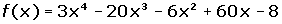
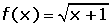
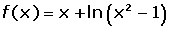
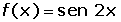
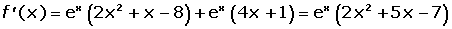
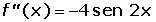

Ejercicios de aplicaciones de la derivada
1Calcular los intervalos de crecimiento y decrecimiento de las funciones siguientes:
1 
2 
3 
4 
5
6
2Calcula los máximos y mínimos de las funciones siguientes:
1 
2 
3 
4 
3Hallar los intervalos de concavidad y convexidad, y los puntos de inflexión de las funciones:
1
2 
3 
4La cotización de las sesiones de una determinada sociedad, suponiendo que la Bolsa funciona todos los días de un mes de 30 días, responde a la siguiente ley:
C = 0.01x3 − 0.45x2 + 2.43x + 300
1 Determinar las cotizaciones máxima y mínima, así como los días en que ocurrieron, en días distintos del primero y del último.
2 Determinar los períodos de tiempo en el que las acciones subieron o bajaron.
5Supongamos que el rendimiento r en % de un alumno en un examen de una hora viene dado por:
r = 300t (1−t).
Donde 0 < t < 1 es el tiempo en horas. Se pide:
1 ¿En qué momentos aumenta o disminuye el rendimiento?
2 ¿En qué momentos el rendimiento es nulo?
3 ¿Cuando se obtiene el mayor rendimiento y cuál es?
- 1
- 2
- 3
- 4
- 5
Ejercicio 1 resuelto
Calcular los intervalos de crecimiento y decrecimiento de las funciones siguientes:
1 


2


3 


4


5


6


Ejercicio 2 resuelto
Calcula los máximos y mínimos de las funciones siguientes:
1 


2 



3


4




Ejercicio 3 resuelto
Hallar los intervalos de concavidad y convexidad, y los puntos de inflexión de las funciones:
1


2 


3 


Ejercicio 4 resuelto
La cotización de las sesiones de una determinada sociedad, suponiendo que la Bolsa funciona todos los días de un mes de 30 días, responde a la siguiente ley:
C = 0.01x3 − 0.45x2 + 2.43x + 300
1 Determinar las cotizaciones máxima y mínima, así como los días en que ocurrieron, en días distintos del primero y del último.


2 Determinar los períodos de tiempo en el que las acciones subieron o bajaron.
Del 1 al 3, y del 27 al 30 las acciones subieron, y del 3 al 27 bajaron.
Ejercicio 5 resuelto
Supongamos que el rendimiento r en % de un alumno en un examen de una hora viene dado por:
r = 300t (1−t).
Donde 0 < t < 1 es el tiempo en horas. Se pide:
1 ¿En qué momentos aumenta o disminuye el rendimiento?
r = 300t − 300t²
r′ = 300 − 600t
300 − 600t = 0 t = ½
2 ¿En qué momentos el rendimiento es nulo?
300t (1−t) = 0 t = 0 t = 1
El rendimiento es nulo al empezar (t = 0) y al acabar el examen (t = 1).
3 ¿Cuando se obtiene el mayor rendimiento y cuál es?
r″ (t) = − 600
r (½)= 300 (½) − 300 (½)²= 75
Rendimiento máximo: (½, 75)
 Ejercicios
Ejercicios